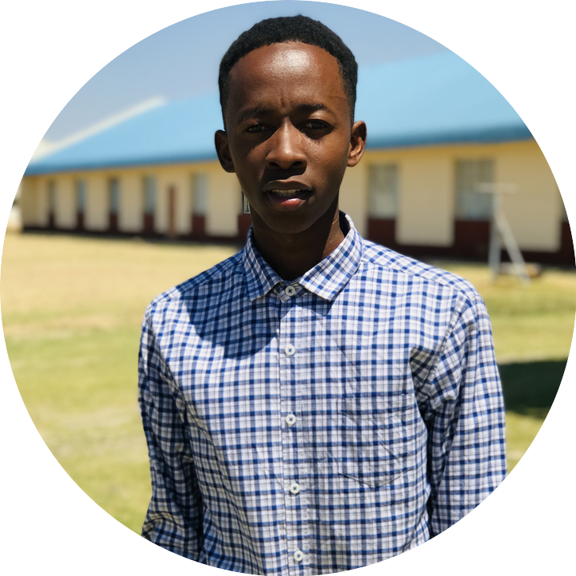

CURRICULUM VITAE
FOR
JOSEPH DHLIWAYO
B.COMS(HONS) DEGREE IN INFORMATION
SYSTEMS
PERSONAL DETAILS
|  |
| Name |
Joseph |
| Surname |
Dhliwayo |
| Martial Status |
Single |
| Date Of Birth |
05/08/1999 |
| Sex |
Male |
| Nationality |
Zimbabwean |
| Identiy No. |
14-238224 E 13 |
| Residential Address |
2302 Magwaza Road Chiredzi |
| Contact Tel |
+263778003305/+263771283006 |
| Email Address |
mrdhliwayojoseph@gmail.com |
| Languages |
English and Shona |
|
My Contact Details
CORE QUALIFICATIONS
Profound commitment to succeed in spite of the facts
Conflict resolution
Ability to respond to adversity
Analytic thinking
KEY SKILLS
Experienced in greeting, assisting and serving people
Good cash handling and mental arithmetic skills
Flexible
Active listening
Creativity
Critical thinking
Decision making
communication
Able to work with others
Able to keep a cool head in stressful situations
TERTIARY QUALIFICATIONS
| Instution |
Midlands State University |
| Program |
Bachelor Of Honours In Information Systems |
| Year |
2019 - 2023 |
CARRIER OBJECTIVES
1. To be in a working enivornment which is challenging and
which allows me to develop myself professionally, socially and educationally.
2. To be a professionally oriented person using the best of
my knowledge, intiative and skils.
REFERENCES
Dr.C.T.Kangara
Chairperson
Department of Information Systems
Midlands State University
Email Adress: chipfumbu@staff.msu.ac.zw
Tel Number: (054-2260409 ext. 2162)